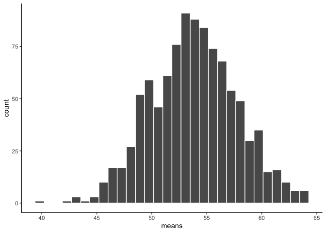

Sampling, Central Limit Theorem and Confidence Intervals
GEO 200CN - Quantitative Geography
Professor Noli Brazil
In this guide, we’ll demonstrate some of the concepts we learned in Chapters 6 and 7 in BBR by working with real data. This will help ground the theorems, abstract equations and images of red balls from lecture. The lab will also give you more practice working with R’s sampling functions. We will be following the material presented in BBR Ch. 6 and 7. The objectives of the guide are as follows
- Learn about estimating population parameters using sampling statistics
- Understand the implications of the Central Limit Theorem using real data
- Learn about uncertainty and confidence intervals
Installing and loading packages
We’ll be working with one new package in this lab, infer. The following code checks if you’ve already installed this package before. If you haven’t, it will install it.
if (!require("infer")) install.packages("infer")Next, we need to load this package as well as tidyverse.
library(infer)
library(tidyverse)Population
The goal is to estimate the average age of a population from a sample. I uploaded onto GitHub a csv file containing the ages of a population of 1,000 residents. The data are also located on Canvas in the Lab and Assignments Week 2 folder. Let’s bring the population into R.
data <- read_csv("https://raw.githubusercontent.com/geo200cn/data/master/ages.csv")The object data contains the population. Because we have a Census, we know the true population parameters. So, we know the population mean
mean(data$age)## [1] 54.004and population standard deviation
sd(data$age)## [1] 17.41066Let’s say we don’t know the ages of every person in the population. Let’s also say we don’t have the resources to conduct a Census. So, we turn to sampling.
Question 1: Create a histogram of age. Does it look normal? Does it matter when you are trying to make inferences about the population mean using a sample?
Sample
We take a sample of size 10 from the population. We can do it the base R way by using sample()
set.seed(1234)
sample_ageb <- sample(data$age, 20, replace=TRUE)Or we can go the tidy R route using sample_n()
#compare sample_n with sample_frac. what's the difference?
sample_aget <- sample_n(data, 20, replace = TRUE)Question 2: Create a histogram of sample_aget? Does it look normal? Does it matter when you are trying to make inferences about the population mean?
But this is only for one sample. We can randomly sample 20 people 10 times. We can do this using the replicate() function.
sim_results_repl <-replicate(10, sample(data$age, 20, replace=TRUE))Or we can use the tidy friendly function rep_sample_n(), which is a part of the infer package we installed earlier.
sim_results_repl10 <-rep_sample_n(data, 20, replace = TRUE, reps = 10)What does the histogram of each of these size 20 samples look like? Use ggplot() which we learned about in the tidy R lab.
ggplot(sim_results_repl10, aes(x=age))+
geom_histogram(color="white")+
facet_wrap(~replicate)+
theme_classic()
The function facet_wrap() allows us to create a histogram for each replicate or sample.
Notice, all of the samples do not have the same looking histogram. This is because of random sampling error (as defined in BBR page 255). All of the samples are coming from the same distribution, but random chance makes each sample a little bit different.
Now let’s look at the mean of the samples.
sample_means <- sim_results_repl10 %>%
group_by(replicate) %>%
summarise(means=mean(age))
sample_means## # A tibble: 10 x 2
## replicate means
## <int> <dbl>
## 1 1 51.4
## 2 2 53.9
## 3 3 53.8
## 4 4 58.4
## 5 5 59.4
## 6 6 55.2
## 7 7 54.4
## 8 8 55.1
## 9 9 57.2
## 10 10 53A histogram gives a visual depiction of the distribution
ggplot(sample_means, aes(x=means))+
geom_histogram(color="white")+
theme_classic()
This is the distribution of the sample means. It doesn’t look like much. That’s because we only took 10 samples.
A note about sampling in R: When you work with using random values, the results will be different each time you run some code (that is the point); but sometimes it is desirable to recreate exactly the same random sequence. The function set.seed() allows you to do that (after all, in computers we can only create pseudo-random values). So, by plugging in set.seed(1234) before we ran the sampling functions above, we can replicate the results at a later time.
Central Limit Theorem
The histogram of 10 sample means looks kind of lonely. Let’s give them some more buddies. How about we repeat our sample 1000 times.
sim_results_repl1000 <-rep_sample_n(data, 20, replace = TRUE, reps = 1000)
sample_means1000 <- sim_results_repl1000 %>%
group_by(replicate) %>%
summarise(means=mean(age))
ggplot(sample_means1000, aes(x=means))+
geom_histogram(color="white")+
theme_classic() 
The central limit theorem basically states that the the distribution of sample means will be a normal curve. It looks normal.
But, what is the mean of the sample means?
mean(sample_means1000$means)## [1] 53.8391And the standard deviation?
sd(sample_means1000$means)## [1] 3.891711
Question 3: According to CLT, what happens to the histogram, mean and standard deviation when you increase n (the sample size)? Show this by running the 1000 samples example above for increasing n. Streamline this process by creating a function that allows you to plug in the (1) variable (2) sample size and (3) number of samples to return the mean and standard deviation of each sample. It should start out something like name of your function <- function(var, n, nsamp) where var is the variable, n is the sample size and nsamp is the number of samples.
Confidence Intervals
The CLT is cool. And its coolness gives us the ability to map our estimate from a single sample onto a normal distribution in order to measure the uncertainty of an estimate. Return for a moment to the question that first motivated this lab: based on a sample, what can we infer about the population? Based only on a single sample, the best estimate of the mean age would be the sample mean. That serves as a good point estimate but it would be useful to also communicate how uncertain we are of that estimate. This can be captured by using a confidence interval.
We can calculate a 95% confidence interval for a sample mean by adding and subtracting 1.96 standard errors to the point estimate (see BBR section 7.3 if you are unfamiliar with this formula)
Let’s go back to our first 20 person sample. Calculate the mean
my_mean <- mean(sample_aget$age)Calculate the standard error
se <- sd(data$age) / sqrt(20)Finally, calculate the lower and upper bounds
lower <- my_mean - 1.96 * se
upper <- my_mean + 1.96 * se
c(lower, upper)## [1] 47.86944 63.13056This is an important inference that we’ve just made: even though we don’t know what the full population looks like, we’re 95% confident that the true average age of the population lies between the values lower and upper given certan conditions are met.
Question 4: Construct the confidence intervals for 1,000 samples of size 20. What proportion of these intervals would you expect to capture the true population mean? Why? Verify this in R.
Question 5: We have data on the population, so we were able to grab the population standard deviation to construct the confidence interval. Construct the appropriate 95% confidence interval for the sample mean if you did not have the population data. Hint: qt() might help you out.
Website created and maintained by Noli Brazil